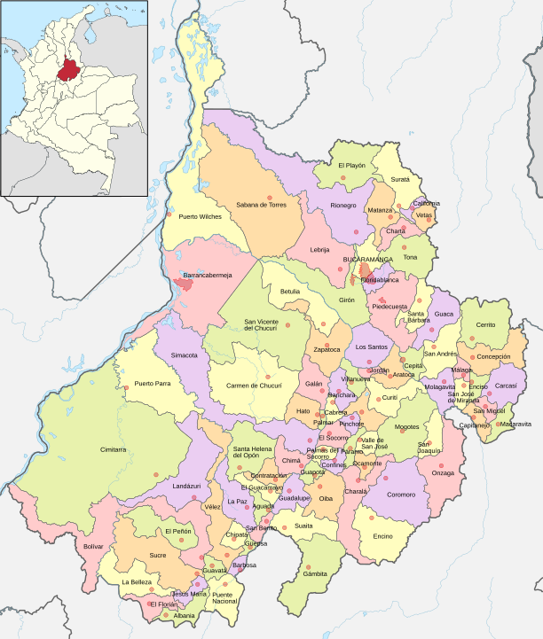

Santander
El departamento de Santander, ubicado en el noreste de Colombia, es conocido por su geografía montañosa y su clima variado. Su capital, Bucaramanga, es un importante centro urbano y comercial. Santander es famoso por su producción de café, panela y carbón, así como por su riqueza cultural y folclórica, con danzas como el "bambuco" y festividades como la Feria de Bucaramanga. La región también cuenta con atractivos naturales como el Parque Nacional de Chicamocha y el cañón del Chicamocha, ideales para el ecoturismo y la aventura.

Costumbres
- Festival de Bucaramanga: Celebración anual que incluye desfiles, conciertos y muestras culturales, destacando la música y danzas locales.
- Bambuco: Danza tradicional que se presenta en festivales y eventos, representando la identidad cultural de la región.
- Semana Santa: Celebraciones religiosas con procesiones y eventos litúrgicos, muy arraigadas en las comunidades.
Comida típica
- Bandeja paisa: Plato abundante que incluye carne, frijoles, arroz, arepas y aguacate, popular en la región.
- Hormiga culona: Un manjar local, estas hormigas son tostadas y se consumen como un snack crujiente.
- Arepas santandereanas: Hechas con maíz y acompañadas de diferentes rellenos, son un alimento básico en la dieta local.
Actividad económica principal
- Industria: Desarrollo de la industria de construcción, textiles y productos alimenticios en Bucaramanga y otras ciudades.
- Agricultura: Producción de café, caña de azúcar y hortalizas, que son fundamentales para la economía local.
- Turismo: Atractivos naturales como el Parque Nacional del Chicamocha impulsan el ecoturismo y actividades de aventura.
Población
- Diversidad étnica: La población incluye mestizos y comunidades afrodescendientes, con una rica herencia cultural.
- Crecimiento urbano: Bucaramanga es la ciudad más poblada y un importante centro económico, con un crecimiento sostenido.
- Cultura comunitaria: La gente de Santander es conocida por su amabilidad y sentido de comunidad, reflejado en sus tradiciones y festividades.
Atrás